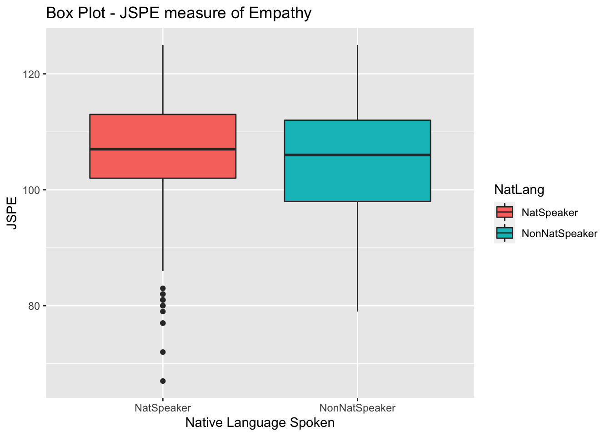
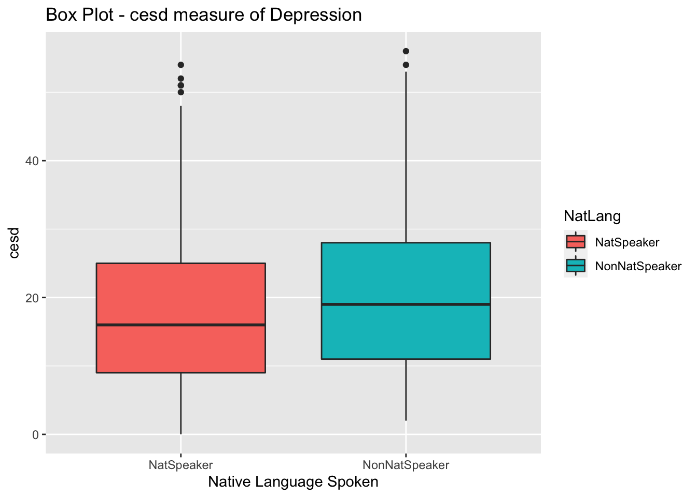
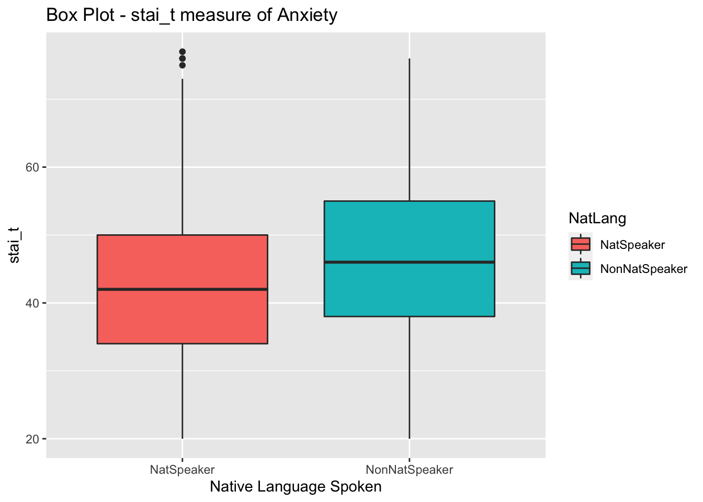
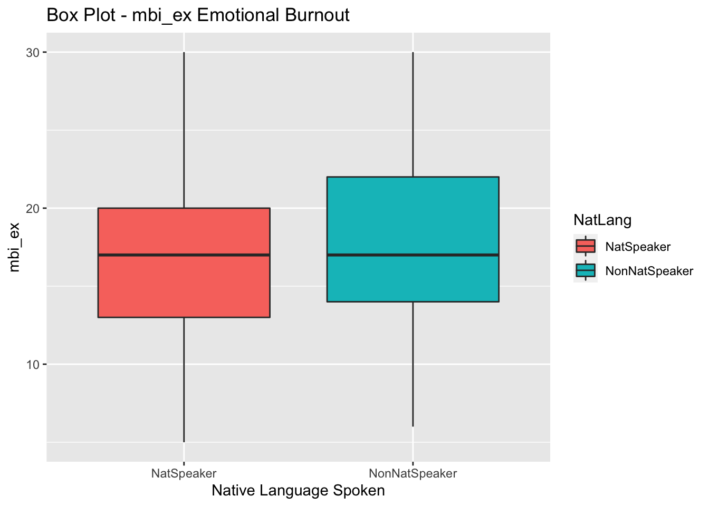
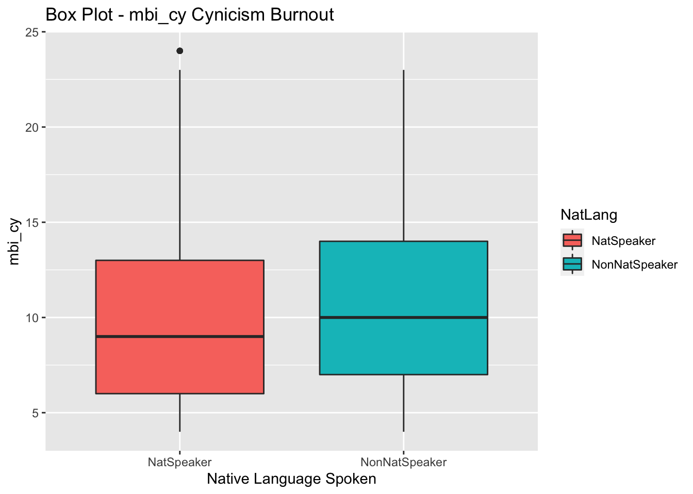
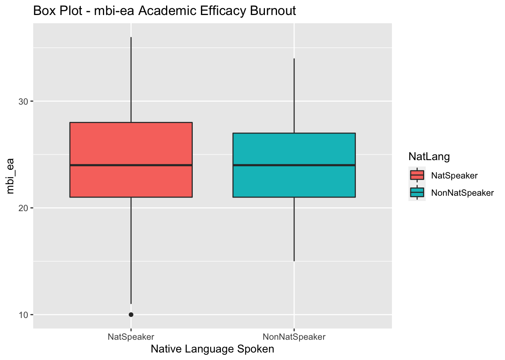

Code
library(tidyverse)
knitr::opts_chunk$set(echo = TRUE)Emma Narkewicz
March 21, 2023
For my final project I want to expand on research on the mental health, empathy, and burnout of medical school students using a data set of 886 medical students in Switzerland. The COVID-19 pandemic heightened the mental health challenges of health care workers around the world (Teisman et al., 2021). Numerous studies show that health care workers are prone to compassion fatigue due to working long hours in stressful work environments with continuous exposure to trauma (Jennings, 2009; Rodriguez & Carlotta, 2017; Peters, 2018; Yayha et al., 2021; Carrard et al., 2022; Shin et al., 2022).
The Association of American Medical Colleges (AAMC) found that 30% of surveyed medical students and residents met the criteria for depression and 10% reported having suicidal thoughts (Pasturel, 2020). Previous studies conducted on samples of health care workers in Switzerland, Iraq, and South Korea examined the impact of gender on burnout, finding that female medical students had higher rates of empathy and burnout than male coworkers (Carrard et al., 2022; Yahya et al., 2021; Shin et al., 2022). A 2009 multi-site study of medical students in the U.S. found statistically significant differences in depression by gender but not by ethnicity (Goebert et al., 2009). In contrast, the same study found statistically significant differences in suicidal ideation by ethnicity, but not by gender, with Black students reporting the highest rates of suicidal ideation & Caucasian students reporting the lowest rates of suicidal ideation (Goebert et al., 2009).
Research Question: Why are some medical students more likely to experience burnout than others?
I want to explore further how ethnic identity might serve as a protective or risk factor for the burnout of medical students, specifically for international medical students. A 2022 study of medical school students in Croatia found that international medical students experience higher rates of burnout mediated by social and familial loneliness (Gradiski et al., 2022). For my final project I will test whether or not a student’s first language being a national language of Switzerland – where the sample was taken – impacts their burnout. The commonly spoken national languages of Switzerland are French, German, and Italian (Kużelewska, 2016).
Hypothesis: Medical students whose native language is a national language of the country where they are studying will experience lower rates of burnout than medical students with other native languages.
The reasoning behind my hypothesis is if a medical student’s native language is one of the national language of Switzerland, they will have benefit from potential protective factors of social, cultural, and familial connections. In contrast, I expect medical students whose native language is not German, French, or Italian to be at higher risk for burnout mediated through increased stress from coping with different culture, language, and physical separation from their family.
The data set I will be analyzing contains demographic information on 886 medical students in Switzerland. Students answered demographic information about their age, gender, their year in school and well as the results of self-reported empathy, depression, anxiety, and burnout. The data set was downloaded from Kaggle at https://www.kaggle.com/datasets/thedevastator/medical-student-mental-health?select=Codebook+Carrard+et+al.+2022+MedTeach.csv but originally sourced for a 2022 publication in the Medical Teacher Journe by Carrard et al.
Important variables I want to explore in my data set as potential risk and protective factors:
Each of the various empathy, mental health, and burnout scales are scored differently, so care needs to be taken in interpreting these findings.For example, a higher score on the emotional exhaustion and cynicism scales of the MBI indicate higher burn out, while a higher score on the MBI personal achievement indicates lower levels of burnout (Maslach et al., 1996).
Rows: 886 Columns: 20
── Column specification ────────────────────────────────────────────────────────
Delimiter: ","
dbl (20): id, age, year, sex, glang, part, job, stud_h, health, psyt, jspe, ...
ℹ Use `spec()` to retrieve the full column specification for this data.
ℹ Specify the column types or set `show_col_types = FALSE` to quiet this message.# A tibble: 886 × 20
id age year sex glang part job stud_h health psyt jspe qcae_cog
<dbl> <dbl> <dbl> <dbl> <dbl> <dbl> <dbl> <dbl> <dbl> <dbl> <dbl> <dbl>
1 2 18 1 1 120 1 0 56 3 0 88 62
2 4 26 4 1 1 1 0 20 4 0 109 55
3 9 21 3 2 1 0 0 36 3 0 106 64
4 10 21 2 2 1 0 1 51 5 0 101 52
5 13 21 3 1 1 1 0 22 4 0 102 58
6 14 26 5 2 1 1 1 10 2 0 102 48
7 17 23 5 2 1 1 0 15 3 0 117 58
8 21 23 4 1 1 1 1 8 4 0 118 65
9 23 23 4 2 1 1 1 20 2 0 118 69
10 24 22 2 2 1 1 0 20 5 0 108 56
# … with 876 more rows, and 8 more variables: qcae_aff <dbl>, amsp <dbl>,
# erec_mean <dbl>, cesd <dbl>, stai_t <dbl>, mbi_ex <dbl>, mbi_cy <dbl>,
# mbi_ea <dbl>Prior to examining the descriptive statistics from the med school data set I recoded qualitative variables stored as numeric values, using the Carrard et al., 2022 code book, replacing 0, 1 with clear demographic information about age, gender, having a partner etc. The explanatory variable NatLang which collapses down into if medical students native language is German, French, or Italian (NatSpeaker) or not (NotNatSpeaker).
#Recoding categorical variables based on code book
FinalRecoded <- FinalDataSet %>%
mutate(NatLang = case_when(
glang == 1 | glang == 15 | glang == 90 ~ "NatSpeaker",
glang > 19 & glang < 90 | glang > 90 ~ "NonNatSpeaker")
) %>%
relocate(`NatLang`, .before = `age`)%>%
select(!contains("glang")) %>%
mutate(gender = case_when(
sex == 1 ~ "Male",
sex == 2 ~ "Female",
sex == 3 ~ "Non-Binary")
) %>%
relocate(`gender`, .before = `age`)%>%
select(!contains("sex")) %>%
mutate(partner = case_when(
part == 0 ~ "single",
part == 1 ~ "partnered")
) %>%
relocate(`partner`, .before = `age`)%>%
select(!"part") %>%
mutate(paid_job = case_when(
job == 0 ~ "no_job",
job == 1 ~ "yes_job")
) %>%
relocate(`paid_job`, .before = `age`)%>%
select(!"job") %>%
mutate(health_sat = case_when(
health == 1 ~ "very_dis",
health == 2 ~ "dis",
health == 3 ~ "neutral",
health == 4 ~ "sat",
health == 5 ~ "dis_sat")
) %>%
relocate(`health_sat`, .before = `age`)%>%
select(!"health") %>%
mutate(MHcare = case_when(
psyt == 0 ~ "no_ther",
psyt == 1 ~ "yes_ther")
) %>%
relocate(`MHcare`, .before = `age`)%>%
select(!"psyt")
FinalRecoded# A tibble: 886 × 20
id NatLang gender partner paid_…¹ healt…² MHcare age year stud_h jspe
<dbl> <chr> <chr> <chr> <chr> <chr> <chr> <dbl> <dbl> <dbl> <dbl>
1 2 NonNatS… Male partne… no_job neutral no_th… 18 1 56 88
2 4 NatSpea… Male partne… no_job sat no_th… 26 4 20 109
3 9 NatSpea… Female single no_job neutral no_th… 21 3 36 106
4 10 NatSpea… Female single yes_job dis_sat no_th… 21 2 51 101
5 13 NatSpea… Male partne… no_job sat no_th… 21 3 22 102
6 14 NatSpea… Female partne… yes_job dis no_th… 26 5 10 102
7 17 NatSpea… Female partne… no_job neutral no_th… 23 5 15 117
8 21 NatSpea… Male partne… yes_job sat no_th… 23 4 8 118
9 23 NatSpea… Female partne… yes_job dis no_th… 23 4 20 118
10 24 NatSpea… Female partne… no_job dis_sat no_th… 22 2 20 108
# … with 876 more rows, 9 more variables: qcae_cog <dbl>, qcae_aff <dbl>,
# amsp <dbl>, erec_mean <dbl>, cesd <dbl>, stai_t <dbl>, mbi_ex <dbl>,
# mbi_cy <dbl>, mbi_ea <dbl>, and abbreviated variable names ¹paid_job,
# ²health_sat id NatLang gender partner
Min. : 2.0 Length:886 Length:886 Length:886
1st Qu.: 447.5 Class :character Class :character Class :character
Median : 876.0 Mode :character Mode :character Mode :character
Mean : 889.7
3rd Qu.:1341.8
Max. :1790.0
paid_job health_sat MHcare age
Length:886 Length:886 Length:886 Min. :17.00
Class :character Class :character Class :character 1st Qu.:20.00
Mode :character Mode :character Mode :character Median :22.00
Mean :22.38
3rd Qu.:24.00
Max. :49.00
year stud_h jspe qcae_cog
Min. :1.000 Min. : 0.00 Min. : 67.0 Min. :37.00
1st Qu.:1.000 1st Qu.:12.00 1st Qu.:101.0 1st Qu.:54.00
Median :3.000 Median :25.00 Median :107.0 Median :58.00
Mean :3.103 Mean :25.29 Mean :106.4 Mean :58.53
3rd Qu.:5.000 3rd Qu.:36.00 3rd Qu.:113.0 3rd Qu.:63.00
Max. :6.000 Max. :70.00 Max. :125.0 Max. :76.00
qcae_aff amsp erec_mean cesd
Min. :18.00 Min. : 6.00 Min. :0.3571 Min. : 0.00
1st Qu.:31.00 1st Qu.:20.00 1st Qu.:0.6667 1st Qu.: 9.00
Median :35.00 Median :23.00 Median :0.7262 Median :16.00
Mean :34.78 Mean :23.15 Mean :0.7201 Mean :18.05
3rd Qu.:39.00 3rd Qu.:26.75 3rd Qu.:0.7857 3rd Qu.:25.00
Max. :48.00 Max. :35.00 Max. :0.9524 Max. :56.00
stai_t mbi_ex mbi_cy mbi_ea
Min. :20.0 Min. : 5.00 Min. : 4.00 Min. :10.00
1st Qu.:34.0 1st Qu.:13.00 1st Qu.: 6.00 1st Qu.:21.00
Median :43.0 Median :17.00 Median : 9.00 Median :24.00
Mean :42.9 Mean :16.88 Mean :10.08 Mean :24.21
3rd Qu.:51.0 3rd Qu.:20.00 3rd Qu.:13.00 3rd Qu.:28.00
Max. :77.0 Max. :30.00 Max. :24.00 Max. :36.00 Note that id is not a true numeric variable and therefor the descriptive statistics for it should be disregarded.
Medical students in the sample studied for an average of 25 hours a week, with a maximum of 70 hours.
Scores on the Jefferson Scale of Physician Empathy (JSPE) range from 20-140 with a higher score indicating higher empathy. The mean JSPE score in the sample was was 106.2 and the median JSPE score was 107.0 indicating relatively high empathy. There was a broad range from as low to 67-125, with the IQR indicating most medical students scored in the low 100s range.
There were are scores for all 3 components of MBI burnout: emotional exhaustion, cynicism, and personal achievement.
On the mbi-ex, medical school students’ scores ranged from 5-30, with a median score of 17 and a mean score of 16.88. According to the MBI score guide, half of medical students in the sample exhibit low-level burnout (scoring 17 or less), and the other half exhibiting moderate burnout in terms of emotional exhaustion.
On the mbi-cyn, medical students’ scores ranged from 4-24, with a median of 9 and mean of 10.08. According to the scoring guide, the majority of the sample exhibit moderate burnout (6-11) with some exhibiting high level burnout (12+) in the dimension of cynicism.
On the mbi-ea, medical students scores ranged from 10-36, with a median score of 24 and a mean score of 24.01. A score of 33 or less indicates high level of burnout and a score between 24-39 indicates moderate level burnout, with medical students falling in the high and moderate burnout range for personal achievement.
NatLang
NatSpeaker NonNatSpeaker
0.8950339 0.1049661 gender
Female Male Non-Binary
0.683972912 0.310383747 0.005643341 partner
partnered single
0.5632054 0.4367946 paid_job
no_job yes_job
0.6512415 0.3487585 health_sat
dis dis_sat neutral sat very_dis
0.09819413 0.25282167 0.15349887 0.45372460 0.04176072 MHcare
no_ther yes_ther
0.775395 0.224605 From the proportion tables above it can be seen that majority (90%) of the sample speaks one of the national languages of Switzerland, while only 10% are non native speakers. The sample is also mostly female (68%), with less than 1% identifying as non-binary. Over half (56%) of the medical students reported having partners, but only about a third of medical students had a paid job (34.9%). The most common (45%) report from medical students was that they were satisfied with their health and less than one quarter (22.5%) of medical student reported seeing a therapist in the last 12 months.
Finally, I created a several box plots comparing the empathy, mental health, and burnout scores of medical students whose native language is a national language of Switzerland vs. students whose native language is not.

From the box plot of JSPE scores, native speakers of national languages have slightly higher median empathy than non-native students, though they are very close and there appear to be several low outliers for native speakers.

Non-native national language speakers have a higher median on CESD than native national language speakers, suggesting higher depression.

Non-native national languages speakers also seem to score higher for anxiety as measured by the stai_t.

Native language speaking and non-native language speaking medical students seemed to have nearly identical median scores for Emotional Exhaustion (mbi_ex).

Non-native speaking medical students appeared to score slightly higher on average than non-native speaking medical students on Cynicism as measured by the mbi-cy, with a higher median score.

Lastly, Native language speaking and non-native language speaking medical students seemed to have nearly identical median scores for Personal Achievement burnout (mbi_ea).
I look forward to analyzing the data set and testing my hypothesis in the coming weeks, as well as getting feedback on this proposal.
Carrard, V., Bourquin, C., Berney, S, Schlegel, K., Gaume, J., Bart, P-A., Preisig M., Mast, M. A., & Berney, A. (2022) The relationship between medical students’ empathy, mental health, and burnout: A cross-sectional study, Medical Teacher, 44:12, 1392-1399, DOI: 10.1080/0142159X.2022.2098708
Gradiski, I. P., Borovecki, A., Ćurković, M., San-Martín, M., Delgado Bolton, R. C., & Vivanco, L. (2022). Burnout in International Medical Students: Characterization of Professionalism and Loneliness as Predictive Factors of Burnout. International journal of environmental research and public health, 19(3), 1385. https://doi.org/10.3390/ijerph19031385
Goebert., D., Thompson., D., Takeshita., J., Beach, C., Bryson, P., Ephgrave, K., Kent. A., Kunkel., M., Schechter., J., Tate., J. (2009). Depressive Symptoms in Medical Students and Residents: A Multischool Study. Academic Medicine 84(2):p 236-241, DOI: 10.1097/ACM.0b013e31819391bb
Jennings, M.L. Medical Student Burnout: Interdisciplinary Exploration and Analysis. J Med Humanit 30, 253–269 (2009). https://doi.org/10.1007/s10912-009-9093-5
Kużelewska,E. (2016).Language Policy in Switzerland. Studies in Logic, Grammar and Rhetoric,45(1) 125-140. https://doi.org/10.1515/slgr-2016-0020
Maslach, C., Jackson, S.E., & Jackson, Leiter, M. P. (Eds.) (1996). Maslach Burnout Inventory manual (3rd ed.).
Paturel, A. (2020). Healing the very youngest healers. American Association of Medical Colleges (AAMC). https://www.aamc.org/news-insights/healing-very-youngest-healers#:~:text=In%20a%20recent%20study%20%2C%209.4,as%20their%20same%2Dage%20peers.
Peters E. (2018). Compassion fatigue in nursing: A concept analysis. Nursing forum, 53(4), 466–480. https://doi.org/10.1111/nuf.12274
Radloff, L.S. (1977). The CES-D Scale: a self-report depression scale for research in the general population. Applied Psychological Measurement, 1:385-401.
Rodriguez, S. Y. S., Carlotta, M. S.. (2017). Predictors of Burnout Syndrome in psychologists. Estudos De Psicologia (campinas), 34(Estud. psicol. (Campinas), 2017 34(1)), 141–150. https://doi.org/10.1590/1982-02752017000100014
Shin, H. S., Park, H., & Lee, Y. M. (2022). The relationship between medical students’ empathy and burnout levels by gender and study years. Patient education and counseling, 105(2), 432–439. https://doi.org/10.1016/j.pec.2021.05.036
Tiesman, H., Weissman, D., Stone., D., Quinlan, K., & Chosewood, L. (2021). Suicide Prevention for Healthcare Workers. CDC. https://blogs.cdc.gov/niosh-science-blog/2021/09/17/suicide-prevention-hcw/
Williams, B., Beovich, B. Psychometric properties of the Jefferson Scale of Empathy: a COSMIN systematic review protocol. Syst Rev 8, 319 (2019). https://doi.org/10.1186/s13643-019-1240-0
Yahya, M. S., Abutiheen, A. A., & Al- Haidary, A. F. (2021). Burnout among medical students of the University of Kerbala and its correlates. Middle East Current Psychiatry, Ain Shams University, 28(1), 78. https://doi.org/10.1186/s43045-021-00152-2
---
title: "Final Project Proposal"
author: "Emma Narkewicz"
desription: "Emma Narkewicz Final Proposal"
date: "03/21/2023"
format:
html:
toc: true
code-fold: true
code-copy: true
code-tools: true
categories:
- emma_narkewicz
- finalpart1
- Burnout
- Medical_students
---
```{r}
#| label: setup
#| warning: false
library(tidyverse)
knitr::opts_chunk$set(echo = TRUE)
```
## Research Question
For my final project I want to expand on research on the mental health, empathy, and burnout of medical school students using a data set of 886 medical students in Switzerland. The COVID-19 pandemic heightened the mental health challenges of health care workers around the world (Teisman et al., 2021). Numerous studies show that health care workers are prone to compassion fatigue due to working long hours in stressful work environments with continuous exposure to trauma (Jennings, 2009; Rodriguez & Carlotta, 2017; Peters, 2018; Yayha et al., 2021; Carrard et al., 2022; Shin et al., 2022).
The Association of American Medical Colleges (AAMC) found that 30% of surveyed medical students and residents met the criteria for depression and 10% reported having suicidal thoughts (Pasturel, 2020). Previous studies conducted on samples of health care workers in Switzerland, Iraq, and South Korea examined the impact of gender on burnout, finding that female medical students had higher rates of empathy and burnout than male coworkers (Carrard et al., 2022; Yahya et al., 2021; Shin et al., 2022). A 2009 multi-site study of medical students in the U.S. found statistically significant differences in depression by gender but not by ethnicity (Goebert et al., 2009). In contrast, the same study found statistically significant differences in suicidal ideation by ethnicity, but not by gender, with Black students reporting the highest rates of suicidal ideation & Caucasian students reporting the lowest rates of suicidal ideation (Goebert et al., 2009).
*Research Question: Why are some medical students more likely to experience burnout than others?*
## Hypothesis Testing
I want to explore further how ethnic identity might serve as a protective or risk factor for the burnout of medical students, specifically for international medical students. A 2022 study of medical school students in Croatia found that international medical students experience higher rates of burnout mediated by social and familial loneliness (Gradiski et al., 2022). For my final project I will test whether or not a student's first language being a national language of Switzerland -- where the sample was taken -- impacts their burnout. The commonly spoken national languages of Switzerland are French, German, and Italian (Kużelewska, 2016).
*Hypothesis: Medical students whose native language is a national language of the country where they are studying will experience lower rates of burnout than medical students with other native languages.*
The reasoning behind my hypothesis is if a medical student's native language is one of the national language of Switzerland, they will have benefit from potential protective factors of social, cultural, and familial connections. In contrast, I expect medical students whose native language is not German, French, or Italian to be at higher risk for burnout mediated through increased stress from coping with different culture, language, and physical separation from their family.
## Descriptive Statistics
The data set I will be analyzing contains demographic information on 886 medical students in Switzerland. Students answered demographic information about their age, gender, their year in school and well as the results of self-reported empathy, depression, anxiety, and burnout. The data set was downloaded from Kaggle at https://www.kaggle.com/datasets/thedevastator/medical-student-mental-health?select=Codebook+Carrard+et+al.+2022+MedTeach.csv but originally sourced for a 2022 publication in the Medical Teacher Journe by Carrard et al.
Important variables I want to explore in my data set as potential risk and protective factors:
- Native Language
- Age
- Gender
- Having a romantic partner
- Seeing a psychotherapist
- Hours worked
- Jefferson Scale Empathy (JSPE) total empathy score
- Questionnaire of Cognitive and Affective Empathy (QCAE) Cognitive empathy score
- Questionnaire of Cognitive and Affective Empathy QCAE Affective empathy score
- Center for Epidemiologic Studies Depression Scale (CES-D) total score
- State & Trait Anxiety (STAI) score
- Maslach Burnout Inventory (MBI) Emotional Exhaustion
- Maslach Burnout Inventory (MBI) Cynicism
- Maslach Burnout Inventory (MBI) Academic Efficacy
Each of the various empathy, mental health, and burnout scales are scored differently, so care needs to be taken in interpreting these findings.For example, a higher score on the emotional exhaustion and cynicism scales of the MBI indicate higher burn out, while a higher score on the MBI personal achievement indicates lower levels of burnout (Maslach et al., 1996).
```{r}
#Readin Final data set
FinalDataSet <- read_csv("_data/med_student_burnout.csv")
FinalDataSet
```
Prior to examining the descriptive statistics from the med school data set I recoded qualitative variables stored as numeric values, using the Carrard et al., 2022 code book, replacing 0, 1 with clear demographic information about age, gender, having a partner etc. The explanatory variable NatLang which collapses down into if medical students native language is German, French, or Italian (NatSpeaker) or not (NotNatSpeaker).
```{r}
#Recoding categorical variables based on code book
FinalRecoded <- FinalDataSet %>%
mutate(NatLang = case_when(
glang == 1 | glang == 15 | glang == 90 ~ "NatSpeaker",
glang > 19 & glang < 90 | glang > 90 ~ "NonNatSpeaker")
) %>%
relocate(`NatLang`, .before = `age`)%>%
select(!contains("glang")) %>%
mutate(gender = case_when(
sex == 1 ~ "Male",
sex == 2 ~ "Female",
sex == 3 ~ "Non-Binary")
) %>%
relocate(`gender`, .before = `age`)%>%
select(!contains("sex")) %>%
mutate(partner = case_when(
part == 0 ~ "single",
part == 1 ~ "partnered")
) %>%
relocate(`partner`, .before = `age`)%>%
select(!"part") %>%
mutate(paid_job = case_when(
job == 0 ~ "no_job",
job == 1 ~ "yes_job")
) %>%
relocate(`paid_job`, .before = `age`)%>%
select(!"job") %>%
mutate(health_sat = case_when(
health == 1 ~ "very_dis",
health == 2 ~ "dis",
health == 3 ~ "neutral",
health == 4 ~ "sat",
health == 5 ~ "dis_sat")
) %>%
relocate(`health_sat`, .before = `age`)%>%
select(!"health") %>%
mutate(MHcare = case_when(
psyt == 0 ~ "no_ther",
psyt == 1 ~ "yes_ther")
) %>%
relocate(`MHcare`, .before = `age`)%>%
select(!"psyt")
FinalRecoded
```
```{r}
#Descriptive statistics for quantitative variables
summary(FinalRecoded)
```
Note that id is not a true numeric variable and therefor the descriptive statistics for it should be disregarded.
Medical students in the sample studied for an average of 25 hours a week, with a maximum of 70 hours.
Scores on the Jefferson Scale of Physician Empathy (JSPE) range from 20-140 with a higher score indicating higher empathy. The mean JSPE score in the sample was was 106.2 and the median JSPE score was 107.0 indicating relatively high empathy. There was a broad range from as low to 67-125, with the IQR indicating most medical students scored in the low 100s range.
There were are scores for all 3 components of MBI burnout: emotional exhaustion, cynicism, and personal achievement.
- On the mbi-ex, medical school students' scores ranged from 5-30, with a median score of 17 and a mean score of 16.88. According to the MBI score guide, half of medical students in the sample exhibit low-level burnout (scoring 17 or less), and the other half exhibiting moderate burnout in terms of emotional exhaustion.
- On the mbi-cyn, medical students' scores ranged from 4-24, with a median of 9 and mean of 10.08. According to the scoring guide, the majority of the sample exhibit moderate burnout (6-11) with some exhibiting high level burnout (12+) in the dimension of cynicism.
- On the mbi-ea, medical students scores ranged from 10-36, with a median score of 24 and a mean score of 24.01. A score of 33 or less indicates high level of burnout and a score between 24-39 indicates moderate level burnout, with medical students falling in the high and moderate burnout range for personal achievement.
```{r}
#Frequency of categorical & ordinal variables
prop.table(table(select(FinalRecoded, NatLang)))
prop.table(table(select(FinalRecoded, gender)))
prop.table(table(select(FinalRecoded, partner)))
prop.table(table(select(FinalRecoded, paid_job)))
prop.table(table(select(FinalRecoded, health_sat)))
prop.table(table(select(FinalRecoded, MHcare)))
```
From the proportion tables above it can be seen that majority (90%) of the sample speaks one of the national languages of Switzerland, while only 10% are non native speakers. The sample is also mostly female (68%), with less than 1% identifying as non-binary. Over half (56%) of the medical students reported having partners, but only about a third of medical students had a paid job (34.9%). The most common (45%) report from medical students was that they were satisfied with their health and less than one quarter (22.5%) of medical student reported seeing a therapist in the last 12 months.
Finally, I created a several box plots comparing the empathy, mental health, and burnout scores of medical students whose native language is a national language of Switzerland vs. students whose native language is not.
```{r}
# Empathy Score
ggplot(data = FinalRecoded, aes(x= NatLang, y = jspe, fill = NatLang)) +
geom_boxplot() +
labs(title = "Box Plot - JSPE measure of Empathy", x = "Native Language Spoken", y = "JSPE")
```
From the box plot of JSPE scores, native speakers of national languages have slightly higher median empathy than non-native students, though they are very close and there appear to be several low outliers for native speakers.
```{r}
#Depression Score
ggplot(data = FinalRecoded, aes(x= NatLang, y = cesd, fill = NatLang)) + geom_boxplot() +
labs(title = "Box Plot - cesd measure of Depression", x = "Native Language Spoken", y = "cesd")
```
Non-native national language speakers have a higher median on CESD than native national language speakers, suggesting higher depression.
```{r}
#Anxiety Score
ggplot(data = FinalRecoded, aes(x= NatLang, y = stai_t, fill = NatLang)) + geom_boxplot() +
labs(title = "Box Plot - stai_t measure of Anxiety", x = "Native Language Spoken", y = "stai_t")
```
Non-native national languages speakers also seem to score higher for anxiety as measured by the stai_t.
```{r}
#Emotional Exhaustion Burnout Score
ggplot(data = FinalRecoded, aes(x= NatLang, y = mbi_ex, fill = NatLang)) + geom_boxplot() +
labs(title = "Box Plot - mbi_ex Emotional Burnout", x = "Native Language Spoken", y = "mbi_ex")
```
Native language speaking and non-native language speaking medical students seemed to have nearly identical median scores for Emotional Exhaustion (mbi_ex).
```{r}
#Cynicism Score
ggplot(data = FinalRecoded, aes(x= NatLang, y = mbi_cy, fill = NatLang)) + geom_boxplot() +
labs(title = "Box Plot - mbi_cy Cynicism Burnout", x = "Native Language Spoken", y = "mbi_cy")
```
Non-native speaking medical students appeared to score slightly higher on average than non-native speaking medical students on Cynicism as measured by the mbi-cy, with a higher median score.
```{r}
#Academic Efficacy Score
ggplot(data = FinalRecoded, aes(x= NatLang, y = mbi_ea, fill = NatLang)) + geom_boxplot() +
labs(title = "Box Plot - mbi-ea Academic Efficacy Burnout", x = "Native Language Spoken", y = "mbi_ea")
```
Lastly, Native language speaking and non-native language speaking medical students seemed to have nearly identical median scores for Personal Achievement burnout (mbi_ea).
I look forward to analyzing the data set and testing my hypothesis in the coming weeks, as well as getting feedback on this proposal.
## Works Cited
Carrard, V., Bourquin, C., Berney, S, Schlegel, K., Gaume, J., Bart, P-A., Preisig M., Mast, M. A., & Berney, A. (2022) The relationship between medical students' empathy, mental health, and burnout: A cross-sectional study, Medical Teacher, 44:12, 1392-1399, DOI: 10.1080/0142159X.2022.2098708
Gradiski, I. P., Borovecki, A., Ćurković, M., San-Martín, M., Delgado Bolton, R. C., & Vivanco, L. (2022). Burnout in International Medical Students: Characterization of Professionalism and Loneliness as Predictive Factors of Burnout. International journal of environmental research and public health, 19(3), 1385. https://doi.org/10.3390/ijerph19031385
Goebert., D., Thompson., D., Takeshita., J., Beach, C., Bryson, P., Ephgrave, K., Kent. A., Kunkel., M., Schechter., J., Tate., J. (2009). Depressive Symptoms in Medical Students and Residents: A Multischool Study. Academic Medicine 84(2):p 236-241, DOI: 10.1097/ACM.0b013e31819391bb
Jennings, M.L. Medical Student Burnout: Interdisciplinary Exploration and Analysis. J Med Humanit 30, 253--269 (2009). https://doi.org/10.1007/s10912-009-9093-5
Kużelewska,E. (2016).Language Policy in Switzerland. Studies in Logic, Grammar and Rhetoric,45(1) 125-140. https://doi.org/10.1515/slgr-2016-0020
Maslach, C., Jackson, S.E., & Jackson, Leiter, M. P. (Eds.) (1996). Maslach Burnout Inventory manual (3rd ed.).
Paturel, A. (2020). Healing the very youngest healers. American Association of Medical Colleges (AAMC). https://www.aamc.org/news-insights/healing-very-youngest-healers#:\~:text=In%20a%20recent%20study%20%2C%209.4,as%20their%20same%2Dage%20peers.
Peters E. (2018). Compassion fatigue in nursing: A concept analysis. Nursing forum, 53(4), 466--480. https://doi.org/10.1111/nuf.12274
Radloff, L.S. (1977). The CES-D Scale: a self-report depression scale for research in the general population. Applied Psychological Measurement, 1:385-401.
Rodriguez, S. Y. S., Carlotta, M. S.. (2017). Predictors of Burnout Syndrome in psychologists. Estudos De Psicologia (campinas), 34(Estud. psicol. (Campinas), 2017 34(1)), 141--150. https://doi.org/10.1590/1982-02752017000100014
Shin, H. S., Park, H., & Lee, Y. M. (2022). The relationship between medical students' empathy and burnout levels by gender and study years. Patient education and counseling, 105(2), 432--439. https://doi.org/10.1016/j.pec.2021.05.036
Tiesman, H., Weissman, D., Stone., D., Quinlan, K., & Chosewood, L. (2021). Suicide Prevention for Healthcare Workers. CDC. https://blogs.cdc.gov/niosh-science-blog/2021/09/17/suicide-prevention-hcw/
Williams, B., Beovich, B. Psychometric properties of the Jefferson Scale of Empathy: a COSMIN systematic review protocol. Syst Rev 8, 319 (2019). https://doi.org/10.1186/s13643-019-1240-0
Yahya, M. S., Abutiheen, A. A., & Al- Haidary, A. F. (2021). Burnout among medical students of the University of Kerbala and its correlates. Middle East Current Psychiatry, Ain Shams University, 28(1), 78. https://doi.org/10.1186/s43045-021-00152-2